5. Circular Motion & Gravitation#
Aug 23, 2026 | 8116 words | 54 min read
Chapter roadmap
Circular motion connects the kinematics of changing direction with the forces that produce curved paths. This chapter then extends those same ideas to gravity, orbital motion, tides, and Kepler’s laws.
As you read, focus on three questions:
How are angular quantities related to the linear motion of points on a rotating object?
Why does uniform circular motion require an inward acceleration and net force even when the speed is constant?
How does gravity produce orbital motion and the patterns summarized by Kepler’s laws?
These ideas let us move from describing circular motion to explaining why planets, moons, and satellites follow curved paths.
5.1. Rotation Angle and Angular Velocity#
Newton’s first law tells us that motion is along a straight line at constant speed unless there is a net external force. Uniform circular motion is the simplest form of curved motion, where the object follows a curved path at constant speed. Moving in a circular path is also connected to rotation or rotational motion. Pure translational motion is motion with no rotation. Some motion combines both types.
5.1.1. Rotation Angle#
When objects rotate about some axis (e.g., a CD or compact disc), each point in the object follows a circular arc. Consider a line from the center of the CD to its edge. CD’s are recorded where the pits fall along a curved line that moves through the same angle in the same amount of time. The rotation angle \(\Delta \theta\) is the amount of rotation and is analogous to linear distance. Mathematically, we define the rotation angle as the ratio of the arclength \(\Delta s\) to the radius of curvature \(r\):
{kind=link}
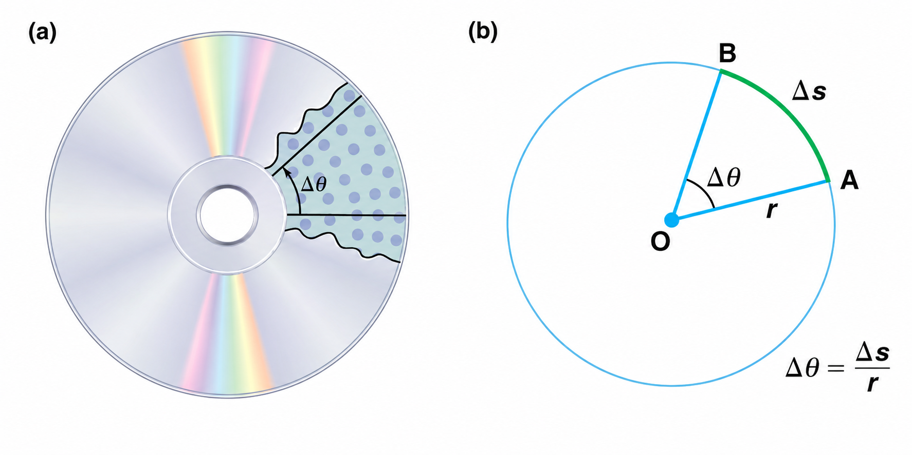
Fig. 5.1 (a) All points on a rotating CD move through the same angular displacement \(\Delta\theta\) during a given time interval, although points farther from the axis travel a greater distance. (b) For a point a distance \(r\) from the axis of rotation, the angular displacement in radians is related to the arclength \(\Delta s\) by \(\Delta\theta = \Delta s/r\).#
We know that for one complete revolution, the arclength is the circumference of a circle of radius \(r\) and a circle’s circumference is \(2\pi r\). For one complete revolution, the rotation angle is
This result is the basis for defining the units used to measure rotation angles \(\Delta \theta\) in radians (rad). Then we can relate radians to degrees using
We can solve the above equation with some algebra to determine the number of degrees in a radian by
Degrees |
\(0^\circ\) |
\(15^\circ\) |
\(30^\circ\) |
\(45^\circ\) |
\(60^\circ\) |
\(75^\circ\) |
\(90^\circ\) |
\(105^\circ\) |
\(120^\circ\) |
\(135^\circ\) |
\(150^\circ\) |
\(165^\circ\) |
\(180^\circ\) |
|---|---|---|---|---|---|---|---|---|---|---|---|---|---|
Radians |
\(0\) |
\(\dfrac{\pi}{12}\) |
\(\dfrac{\pi}{6}\) |
\(\dfrac{\pi}{4}\) |
\(\dfrac{\pi}{3}\) |
\(\dfrac{5\pi}{12}\) |
\(\dfrac{\pi}{2}\) |
\(\dfrac{7\pi}{12}\) |
\(\dfrac{2\pi}{3}\) |
\(\dfrac{3\pi}{4}\) |
\(\dfrac{5\pi}{6}\) |
\(\dfrac{11\pi}{12}\) |
\(\pi\) |
5.1.2. Angular Velocity#
How fast is an object rotating?
We define angular velocity \(\omega\) as the rate of change of angle \(\Delta \theta\). Mathematically this is represented by
where an angular rotation \(\Delta \theta\) occurs in a time interval \(\Delta t\) and angular velocity is measured in units of \(\rm rad/s\). Similar to linear velocity, a greater rotation angle in a given amount of time leads to a greater angular velocity.
Consider a pit on a rotating CD, where the pit moves an arclength \(\Delta s\) in a time \(\Delta t\) (see Fig. 5.1a). The pit has a linear velocity given by
Warning
Notice that we assume the CD does not slip while spinning. If the CD momentarily stopped rotating (i.e., slipped) then the \(\Delta t\) would be larger for a given measured \(\Delta s\). Therefore, this relationship between linear and angular velocity only applies when there is no slipping.
From Eqn. (5.1), we see that \(\Delta s = r\Delta \theta\). We can substitute this relation into our equation for linear velocity \(v\) and substitute for the definition of angular velocity \(\omega\) to get
This relationship can be given in two different ways that corresponds to different insights:
\(v = r\omega\) states that the linear speed is largest at a point on the rim (i.e., largest \(r\)). The velocity of a point on the rim is always perpendicular (or tangent) to the radius. Thus we also call the linear speed as the tangential speed.
\(\omega = v/r\) tells us how fast something rotates given the linear speed and the radius. Consider the tire of a moving car, where the car moves forward with a velocity \(v\) that is equal to the linear velocity of the tire. The faster the car moves (i.e., large \(v\)), then the faster the tire spins (i.e., large \(\omega\)).
5.1.3. Example Problem: How Fast Does a Car Tire Spin?#
Example Problem: How Fast Does a Car Tire Spin?
The Problem
Calculate the angular velocity of a \(0.30\ {\rm m}\)-radius car tire when the car travels at \(15\ {\rm m/s}\).
Fig. 5.2 For a tire rolling without slipping, the speed of the car equals the tangential speed of the tire tread relative to the axle, so \(v=r\omega\). Source: OpenStax, College Physics 2e, Figure 6.5.#
Show worked solution
The Model
We model the tire as a rigid wheel rolling without slipping. The tire radius is \(r=0.30\ {\rm m}\) and the car’s linear speed is \(v=15\ {\rm m/s}\). Because there is no slipping, the tangential speed of the tread relative to the axle equals the translational speed of the car. The unknown is the angular velocity \(\omega\).
The Math
The contact between the tire and the road tells us that the tread speed at the rim matches the car’s translational speed. For a point at radius \(r\) on a rotating tire, tangential speed and angular speed are related by \(v=r\omega.\) The angular velocity is the rotation rate that produces the observed tangential speed at the tire’s radius. Written for the unknown angular velocity, the relation is
For the given car, each point on the tire rim moves at \(15\ {\rm m/s}\) relative to the axle while it is \(0.30\ {\rm m}\) from the rotation axis. As a result, we find that the angular velocity is
The Conclusion
The tire rotates with an angular velocity of about \(50\ {\rm rad/s}\). A larger tire moving at the same car speed would have a smaller angular velocity because \(\omega=v/r\).
Adapted from OpenStax, College Physics 2e, Example 6.1.
Both \(\omega\) and \(v\) have directions since they both represent velocities. Angular velocity has two directions (e.g., clockwise or counterclockwise), while linear velocity is tangent to the path. The linear velocity \(v\) can be decomposed into vector components \(v_x\) and \(v_y\) at a given time \(t\) given a constant spin rate \(\omega\), or
5.2. Centripetal Acceleration#
Recall from kinematics that acceleration is a change in velocity (in its magnitude, direction, or both). In uniform circular motion, the direction of the velocity constantly changes, so there is an associated acceleration even though the magnitude of the velocity is constant.
Fig. 5.3 The velocity of an object moving in a circle changes direction as the object moves along its path. The change in velocity \(\Delta \vec{v}\) points toward the center of curvature, so the centripetal acceleration \(\vec{a}_c = \Delta \vec{v}/\Delta t\) is also directed toward the center. For a sufficiently small angular displacement \(\Delta\theta\), the arc length \(\Delta s\) is approximately equal to the chord length \(\Delta r\). Adapted from OpenStax, College Physics 2e, Figure 6.7.#
For an object moving in a circular path at constant speed (see Figure 5.3), the direction of the instantaneous velocity can be determined at two points (\(B\) and \(C\)) along the path. Acceleration points in the direction of the change in velocity, which is toward the center of rotation in this case. This pointing is shown with the vector diagram in Fig. 5.3. We call the acceleration of an object moving in uniform circular motion the centripetal acceleration \(a_c\), where centripetal means “toward the center” or “center seeking”.
The direction of the centripetal acceleration is toward the center, but what is its magnitude?
We can use the two triangles (i.e., the triangles \(ABC\) and \(PQR\)), where we find that they are similar isosceles triangles with two equal sides. Uniform speed means that \(v_1 = v_2 = v\). Also with the properties of similar triangles, we have
Recall the definition of acceleration \(a = \Delta v/\Delta t\) and our linear velocity \(v = \Delta s/\Delta t\), that means we can rearrange the above expression and divide both sides by \(\Delta t\) (allowed by our algebra rules) to get
We see that the magnitude of the centripetal acceleration is given by
which is the acceleration of an object in a circle of radius \(r\) at a speed \(v\). This relation tells us the following about centripetal acceleration:
it is greater at high speeds (i.e., large \(v\)) and in sharp curves (i.e., small \(r\)).
it is proportional to the speed squared, which means that it is \(4\times\) as hard to take a curve at \(2\times\) the speed (e.g., \(100\ {\rm kph}\) vs. \(50\ {\rm kph}\)).
It is also useful to express \(a_c\) in terms of angular velocity \(\omega\). We can substitute \(v = r\omega\) to find another form as
Fig. 5.4 (a) A car following a circular curve has a centripetal acceleration directed toward the center of the turn. (b) A sample in a centrifuge also requires inward centripetal acceleration as it rotates. These two situations are used in the following worked examples. Source: OpenStax, College Physics 2e, Figure 6.8.#
5.2.1. Example Problem: Centripetal Acceleration of a Car#
Example Problem: How Does a Car’s Centripetal Acceleration Compare with Gravity?
The Problem
What is the magnitude of the centripetal acceleration of a car following a curve of radius \(500\ {\rm m}\) at a speed of \(25\ {\rm m/s}\)? Compare this acceleration with the acceleration due to gravity \(g\).
Show worked solution
The Model
We model the car as moving at constant speed along a circular path. Its speed is \(v=25\ {\rm m/s}\) and the curve has radius \(r=500\ {\rm m}\). The centripetal acceleration points toward the center of the curve. We first determine its magnitude and then compare that value with \(g=9.81\ {\rm m/s^2}\).
The Math
The car moves at constant speed, but its velocity changes direction as it follows the curve. That directional change produces a centripetal acceleration whose magnitude is determined by the speed and the radius of curvature:
The speed appears squared, so the acceleration grows quickly as the car moves faster. For this curve, the centripetal acceleration is given by
To compare this acceleration with ordinary gravitational acceleration near Earth’s surface, we form the dimensionless ratio \(a_c/g\):
The Conclusion
The car has a centripetal acceleration of about \(1.3\ {\rm m/s^2}\), directed toward the center of the curve. This is about \(0.13g\), so even a fairly gentle highway curve can produce a noticeable sideways acceleration.
Adapted from OpenStax, College Physics 2e, Example 6.2.
5.2.2. Example Problem: Centripetal Acceleration in an Ultracentrifuge#
Example Problem: How Big Is the Centripetal Acceleration in an Ultracentrifuge?
The Problem
Calculate the centripetal acceleration of a point \(7.5\ {\rm cm}\) from the axis of an ultracentrifuge spinning at \(7.5\times10^4\ {\rm rev/min}\). Determine the ratio of this acceleration to \(g\).
Show worked solution
The Model
The sample moves in a circle of radius \(r=7.5\ {\rm cm}=0.075\ {\rm m}\). Its rotation rate is given in revolutions per minute, so we first convert that rate to angular velocity in radians per second. Once \(\omega\) is known, the centripetal acceleration follows from \(a_c=r\omega^2\).
The Math
The expression \(a_c=r\omega^2\) requires angular velocity in radians per second, so the rotation rate must first be converted from revolutions per minute. One revolution corresponds to \(2\pi\ {\rm rad}\) and one minute contains \(60\ {\rm s}\), which gives
The point in the ultracentrifuge is \(0.075\ {\rm m}\) from the rotation axis. Its centripetal acceleration follows from the radius multiplied by the square of the angular velocity:
The acceleration is so large that it is more meaningful to compare it with \(g\) than to look only at the value in \({\rm m/s^2}\). The ratio is
The Conclusion
The sample experiences a centripetal acceleration of about \(4.6\times10^6\ {\rm m/s^2}\), or approximately \(4.7\times10^5g\). This enormous acceleration explains why an ultracentrifuge can separate materials much more rapidly than gravity alone.
Adapted from OpenStax, College Physics 2e, Example 6.3.
A centrifuge is a rotating device used to separate specimens of different densities. High centripetal acceleration significantly decreases the time it takes for separation to occur and makes separation possible with small samples. They are used in a variety of applications in science and medicine, including
the separation of single cell suspensions (e.g., bacteria, viruses, and blood cells) from a liquid medium, and
the separation of macromolecules (e.g., DNA and protein) from a solution.
Maximum centripetal acceleration of several hundred thousand times the acceleration due to gravity \(g\) can be achieved in a vacuum. Extremely large centrifuges (containing humans) are used to test the tolerance of test pilots and astronauts against the effects of accelerations larger than that of Earth’s surface gravity.
5.3. Centripetal Force#
Any force or combination of forces can cause a centripetal or radial acceleration (e.g., tension in a rope on a tether ball, Earth’s gravity on the Moon, banked roadway’s force on a car). Any net force causing uniform circular motion is called centripetal force. The direction of a centripetal force is the same as the direction of centripetal acceleration (i.e., toward the center of curvature).
According to Newton’s second law, net force is mass times acceleration (\(\vec{F}_{\rm net} = m\vec{a}\)). For uniform circular motion, the acceleration is the centripetal acceleration \(a_c\). Therefore, the magnitude of the centripetal force \(F_c\) is given by
where Eqn. (5.10) and (5.11) can both be substituted for \(a_c\). You may use whichever expression for centripetal force is more convenient.
Centripetal force \(\vec{F}_c\) is always perpendicular to the velocity vector \(\vec{v}\) and pointing toward the center of curvature. If you know the magnitude of the centripetal force \(F_c\), the mass \(m\), and the speed squared \(v^2\), then you can solve for \(r\) to get
using algebra. This rearrangement of the equation shows that for a given mass and velocity, the centripetal force is inversely proportional to the radius of curvature \(r\).
Note
A linear proportion means that as a variable \(x\) increases, a proportional variable \(y\) also increases. Likewise, a decrease in \(x\) corresponds to a proportional decrease in \(y\).
However, an inversely proportional quantity shows a different property. Suppose that \(x\) is inversely proportional to \(y\). Then as \(x\) increases, the magnitude of \(y\) decreases, and vice versa.
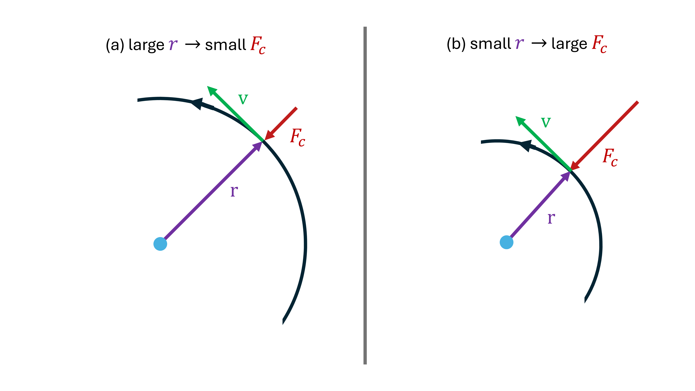
Fig. 5.5 For an object moving at the same speed \(v\), the centripetal force depends inversely on the radius of the circular path. (a) A larger radius \(r\) requires a smaller centripetal force \(F_c\). (b) A smaller radius requires a larger centripetal force. This relationship follows from \(F_c = mv^2/r\). Adapted from OpenStax, College Physics 2e, Figure 6.9.#
Consider a banked curve, where the slope of the road helps you follow the curve without skidding sideways. The greater the banking angle \(\theta\), the faster you can take the curve. Race tracks have steeply banked curves. For a car on level ground, the centripetal force causes a car to turn in a circular path due to the friction between the tires and the road (see Figure 5.6).
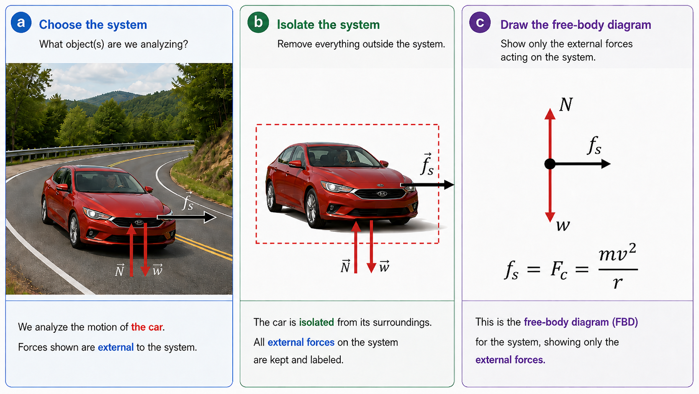
Fig. 5.6 Constructing a free-body diagram for a car following a flat curve. (a) The car is chosen as the system, and the external forces acting on it are identified. (b) Isolating the car shows the normal force \(N\), the weight \(w\), and the static friction force \(f_s\) directed toward the center of the curve. (c) The free-body diagram shows that the vertical forces balance, while static friction provides the net inward force required for circular motion. Thus, \(f_s = F_c = mv^2/r\).#
5.3.1. Example Problem: Friction on a Flat Curve#
Example Problem: What Coefficient of Friction Do Car Tires Need on a Flat Curve?
The Problem
(a) Calculate the centripetal force exerted on a \(900\ {\rm kg}\) car that follows a \(500\ {\rm m}\)-radius curve at \(25\ {\rm m/s}\).
(b) For an unbanked curve, find the minimum coefficient of static friction between the tires and the road that will keep the car from slipping.
Show worked solution
The Model
The car is the system. We define the horizontal radial \(x\)-axis with \(+x\) pointing toward the center of the curve and the vertical \(y\)-axis with \(+y\) upward. On a flat road, the normal force balances the weight, so \(N=mg\). Static friction acts horizontally toward the center and supplies the centripetal force. For the minimum coefficient of static friction, the required friction is just equal to its maximum possible value, \(f_{\rm s,max}=\mu_{\rm s}N\).
The Math
(a) The car needs an inward net force in order to follow the circular path. On any circular path, that required inward force has magnitude
For this car, the mass, speed, and radius of curvature are all known, so the inward force required to maintain the turn is
(b) On a flat curve, the road does not provide any horizontal component of the normal force. Static friction between the tires and the road is therefore the horizontal force that must supply the centripetal force. At the threshold of slipping, the maximum available static friction is \(\mu_{\rm s}N\), so the condition for just making the turn is
The car is not accelerating vertically, so the normal force balances the weight and \(N=mg\). Replacing \(N\) with \(mg\) shows why the car’s mass does not determine the minimum coefficient of friction in this idealized model:
After the common factor of \(m\) cancels, the coefficient of static friction is set by the speed, curve radius, and gravitational acceleration:
The required minimum value for the coefficient of static friction is
The Conclusion
The car requires an inward centripetal force of about \(1.1\times10^3\ {\rm N}\). A coefficient of static friction of about \(0.13\) is the minimum needed at this speed. Static friction is a responsive force, so if the available coefficient is larger than \(0.13\), the tires supply only the friction needed to follow the curve rather than automatically exerting the maximum value.
Adapted from OpenStax, College Physics 2e, Example 6.4.
In an “ideally banked curve”, the banking angle \(\theta\) allows you to follow the curve at a certain speed without the aid of friction between the tires and the road. For ideal banking, the net external force equals the horizontal centripetal force in the absence of friction (see Figure 5.7). The components of the normal force \(\vec{N}\) in the horizontal and vertical directions must equal the centripetal force and the weight of the car, respectively.
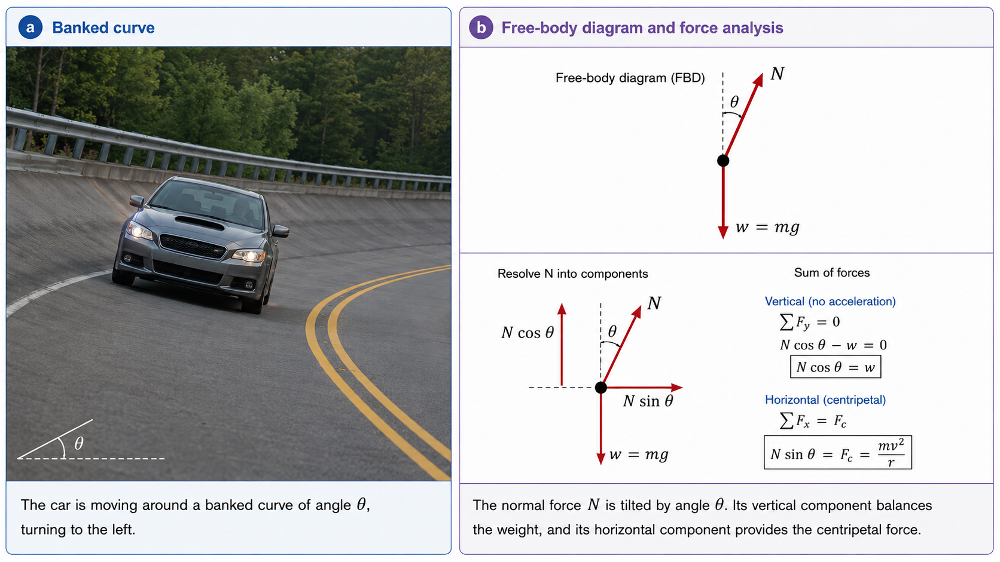
Fig. 5.7 A car travels around a curve banked at an angle \(\theta\). (a) The roadway is tilted so that the normal force is no longer vertical. (b) The normal force \(N\) is resolved into vertical and horizontal components. With no vertical acceleration, \(N\cos\theta=w\). The horizontal component points toward the center of the curve and provides the centripetal force, so \(N\sin\theta=F_c=mv^2/r\). At the design speed shown here, no friction is required for the car to follow the curve.#
If the banking angle \(\theta\) is ideal for the speed and radius, then the net external force will equal the necessary centripetal force. The only two external forces acting on the car are its weight \(\vec{w}\) and the normal force of the road \(\vec{N}\). These two forces must add to give a net external force that is horizontal toward the center of curvature and has a magnitude \(F_c\).
We choose horizontal and vertical coordinate axes, with the horizontal \(x\)-axis pointing toward the center of the curve and the vertical \(y\)-axis pointing upward. The normal force is perpendicular to the road surface, so it has components along both axes. We add the forces along each coordinate direction, where taking the horizontal components we have
Because the car does not leave the road’s surface, the net vertical force must be zero (i.e., the vertical components must cancel). We apply the same procedure for adding the vertical forces to get
We can combine these two results to eliminate \(N\) and get an expression for the banking angle \(\theta\) in terms of the other physical variables. We divide the two equations to get
We can find the angle directly by using the inverse tangent function to get
This expression can be understood by considering how the banking angle \(\theta\) depends on speed \(v\) and radius \(r\). A large \(\theta\) results for a large \(v\) (high speed) and a small \(r\) (sharp curve). Friction helps because it allows you to take the curve at greater or lower speed than if the curve is frictionless. Note that \(\theta\) does not depend on the mass of the vehicle.
5.3.2. Example Problem: Ideal Speed on a Steeply Banked Curve#
Example Problem: What Is the Ideal Speed to Take a Steeply Banked Tight Curve?
The Problem
Calculate the speed at which a \(100\ {\rm m}\)-radius curve banked at \(65^\circ\) should be driven if the road is frictionless.
Show worked solution
The Model
We use the ideal-banking model developed above. The road is frictionless, so the normal force and weight are the only forces on the car. The vertical component of the normal force balances the weight, while its horizontal component supplies the centripetal force. The known quantities are \(r=100\ {\rm m}\) and \(\theta=65^\circ\), and the unknown is the design speed \(v\).
The Math
For an ideally banked curve, friction is not needed to keep the car on the circular path. The horizontal component of the normal force supplies the centripetal force while the vertical component balances the weight, leading to the banking relation
The design speed is the speed that makes this relation true for the given radius and banking angle. Written directly for that speed, the banking relation is
For a \(100\ {\rm m}\) radius curve banked at \(65^\circ\), the ideal speed is
The Conclusion
The ideal speed is about \(46\ {\rm m/s}\), or approximately \(165\ {\rm km/h}\). The large design speed is reasonable because the curve is banked very steeply; at this speed the normal force alone supplies the required inward force.
Adapted from OpenStax, College Physics 2e, Example 6.5.
5.4. Newton’s Universal Law of Gravitation#
In the early 1600s, Johannes Kepler deduced how the planets moved around the Sun by using ellipses instead of circles. With his new models of planetary motion, scientists could more accurately predict the positions of the planets in the night sky. However, they did not know why the planets moved around the Sun. About 80 years later, Isaac Newton developed a mathematical description of physics that included an explanation for why the planets moved. It was through the universal gravitational force. If gravity is universal, this means it can be applied to the Moon around the Earth, apples falling from trees, and even why your feet ache from supporting your weight all day.
The gravitational force is always attractive and depends on the masses involved as well as the distance between them. In Weird Al’s Pancreas, he correctly describes that
My pancreas attracts every other Pancreas in the universe With a force proportional To the product of their masses And inversely proportional To the distance between them
—Weird Al Yankovic
Newton’s Universal Law of Gravitation
For two bodies having masses \(m\) and \(M\) with a distance \(r\) between their centers, the gravitational force is
where \(F\) is the magnitude of the gravitational force and \(G\) is a proportionality constant. This constant has been measured experimentally as
in SI units.
At least one of the two bodies tends to be large, which means we can simplify and represent the two masses as points. The center of the larger mass is usually close to a location called the center of mass, which is the average location of the mass if we divide the object (or system) into pieces of equal mass. The center of mass of a system of objects will respond to external forces as if all the mass were concentrated there.
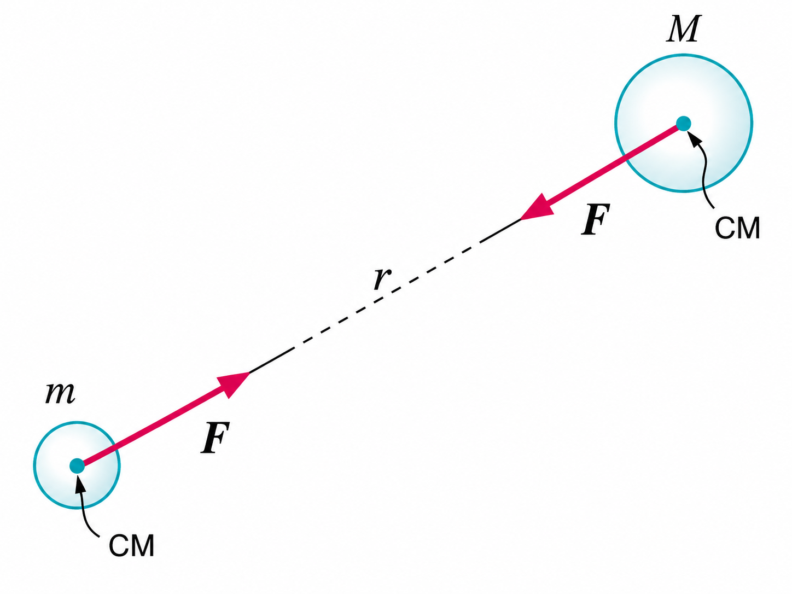
Fig. 5.8 Two masses \(m\) and \(M\) attract one another along the line joining their centers of mass. The separation \(r\) is measured between the centers of mass of the two bodies. The gravitational forces have the same magnitude and opposite directions, consistent with Newton’s third law. Adapted from OpenStax, College Physics 2e, Figure 6.18.#
In Figure 5.8, the magnitude of the force on each body is exactly the same in accordance with Newton’s third law. If we apply Newton’s first and second laws, this helps our intuition because it means with the same applied force \(\vec{F}\), the smaller mass will accelerate more than the larger mass. That is, we have
where \(a_m\) and \(a_M\) are the magnitudes of the acceleration on each mass, respectively.
Recall that the acceleration due to gravity \(g\) is about \(9.81\ {\rm m/s^2}\) at Earth’s surface. We can apply the above reasoning with \(M=M_\oplus\) (i.e., the mass of the Earth; \(M_\oplus = 5.97 \times 10^{24}\ {\rm kg}\)) and \(r=R_\oplus\) (i.e., the radius of the Earth; \(R_\oplus = 6371\ {\rm km}\)).
The acceleration due to gravity \(g\) is an acceleration on an object with a mass \(m\) due to the mass of the Earth \(M_\oplus\). This means we can use the top equation, or
Notice that the value of \(g\) is independent of the body’s mass \(m\). Newton’s law of gravitation takes Galileo’s observation that all masses fall with the same acceleration further by explaining the observation in terms of a force (i.e., a cause).
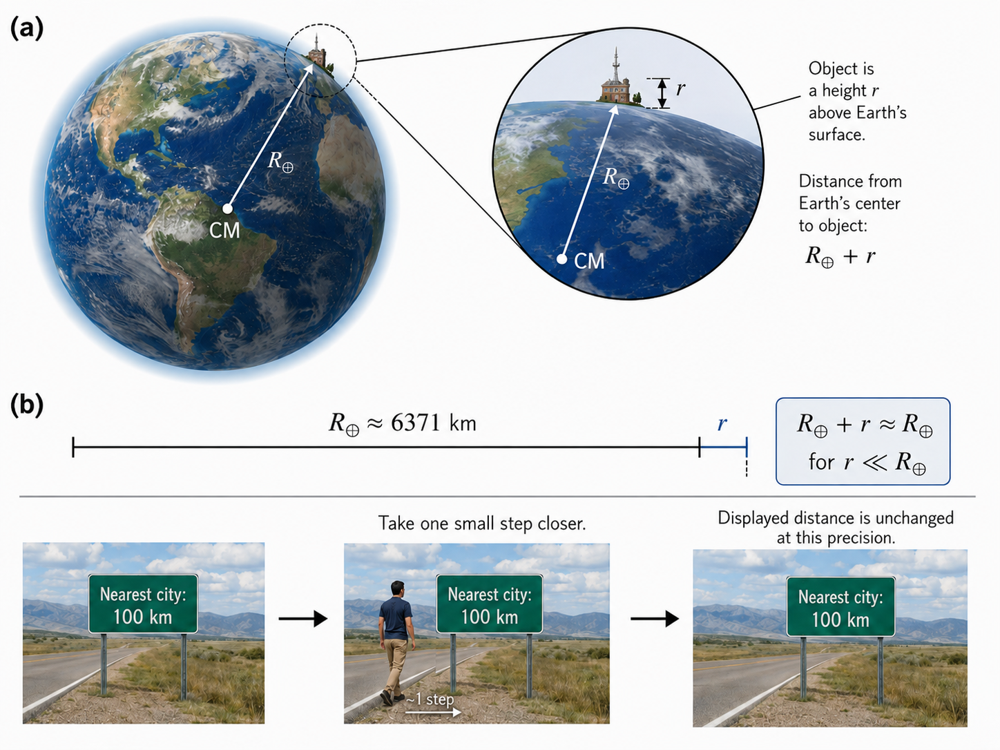
Fig. 5.9 (a) For an object a small distance \(r\) above Earth’s surface, its distance from Earth’s center is \(R_\oplus+r\). When \(r\ll R_\oplus\), the additional height is negligible compared with Earth’s radius, so \(R_\oplus+r\approx R_\oplus\). (b) This approximation is similar to taking one step toward a city that is \(100\ {\rm km}\) away: the actual distance decreases slightly, but at the precision shown on the sign it is still \(100\ {\rm km}\). Panel (a) adapted from OpenStax, College Physics 2e, Figure 6.19.#
In most everyday cases, we can make approximations to make problems easier to solve. For example, our calculation of the acceleration due to gravity made the approximation that \(R_\oplus + r \approx R_\oplus\) because the distance \(r\) was very small compared to the radius of the Earth \(R_\oplus\). In addition, we also made an assumption that the mass of the object \(m\) was very small compared to the mass of the Earth, or \(m \ll M_\oplus\). This means that the center of mass is very nearly at the center of the Earth.
5.4.1. Example Problem: Earth’s Gravity and the Moon’s Orbit#
Example Problem: Earth’s Gravitational Force Keeps the Moon in Orbit
The Problem
(a) Find the acceleration due to Earth’s gravity at the distance of the Moon.
(b) Calculate the centripetal acceleration needed to keep the Moon in its nearly circular orbit, using an orbital period of \(27.3\ {\rm d}\), and compare it with the gravitational acceleration found in part (a).
Show worked solution
The Model
We treat the Moon as a small mass orbiting Earth at a center-to-center distance of \(r=3.84\times10^8\ {\rm m}\). For part (a), Newton’s law of gravitation gives the Moon’s acceleration due to Earth’s mass \(M_\oplus=5.97\times10^{24}\ {\rm kg}\). For part (b), we approximate the orbit as circular and use the lunar period to determine the angular velocity and centripetal acceleration. If gravity is the force that bends the Moon’s path into an orbit, the two accelerations should be nearly the same.
The Math
(a) Newton’s law of gravitation gives the gravitational field produced by Earth at any distance \(r\) from Earth’s center. Dividing the gravitational force by the mass of the object being accelerated gives
At the Moon’s orbital distance, the gravitational acceleration due to Earth is
(b) To compare gravity with the acceleration required for the Moon’s orbital motion, we need the Moon’s angular velocity. The orbital period is given in days, so we first convert it to seconds:
One complete orbit corresponds to an angular displacement of \(2\pi\ {\rm rad}\). The Moon’s angular velocity is therefore \(\omega=2\pi/T\), and the centripetal acceleration required for a circular orbit is
Using the Moon’s orbital radius and period gives
The Conclusion
Earth’s gravitational acceleration at the Moon is about \(2.70\times10^{-3}\ {\rm m/s^2}\), while the centripetal acceleration required by the Moon’s orbit is about \(2.72\times10^{-3}\ {\rm m/s^2}\). The values differ by less than \(1\%\), supporting the conclusion that Earth’s gravity supplies the inward acceleration that keeps the Moon in orbit. The small difference reflects the simplifying assumptions of a circular orbit and a fixed Earth.
Adapted from OpenStax, College Physics 2e, Example 6.6.
What about the Moon?
The Moon is \({\sim}1.2\%\) of Earth’s mass, which is substantial enough for us to consider how the Earth and Moon orbit their common center of mass. Because the Earth is more massive, its orbit about the center of mass is much smaller than the Moon’s orbit. This effect stems from Newton’s third law where there is an equal and opposite force (see Fig. 5.8). In a Sun-centered coordinate system, the path of the Earth and Moon appear to “wiggle” about the center-of-mass orbit. The effect is small, so we need to exaggerate it for it to be noticeable on a graph (see Figure 5.10b). Figure 5.10c shows the radial (toward/away) and tangential (forward/backward) motion of the Earth over one year, where the displacement is only a few thousand kilometers and varies with the Moon’s orbital period.
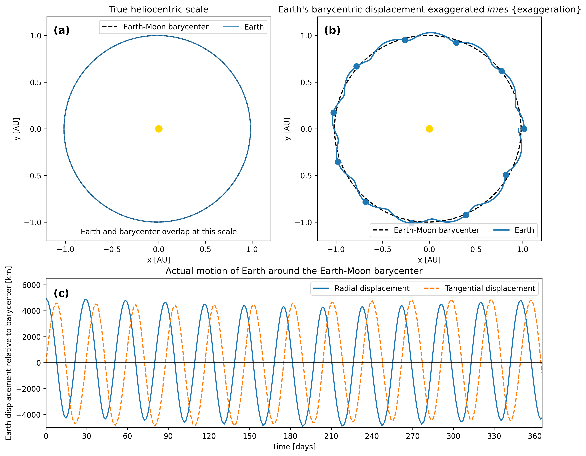
Fig. 5.10 Earth’s motion around the Earth–Moon barycenter is extremely small compared with its orbit around the Sun. (a) At the true heliocentric scale, Earth’s trajectory and the trajectory of the Earth–Moon barycenter are nearly indistinguishable. (b) Exaggerating only Earth’s displacement relative to the barycenter reveals the approximately monthly oscillations superimposed on the annual orbit. (c) The actual radial (toward/away) and tangential (forward/backward) components of Earth’s barycentric displacement are only a few thousand kilometers and vary periodically over the lunar orbit. The trajectories were calculated numerically using REBOUND.#
5.4.2. Tides#
Ocean tides are one observable result of the Moon’s gravity acting on the Earth. Water easily flows on Earth’s surface, where a high tide is created on the side of Earth nearest to the Moon (i.e., where the Moon’s gravitational pull is strongest).
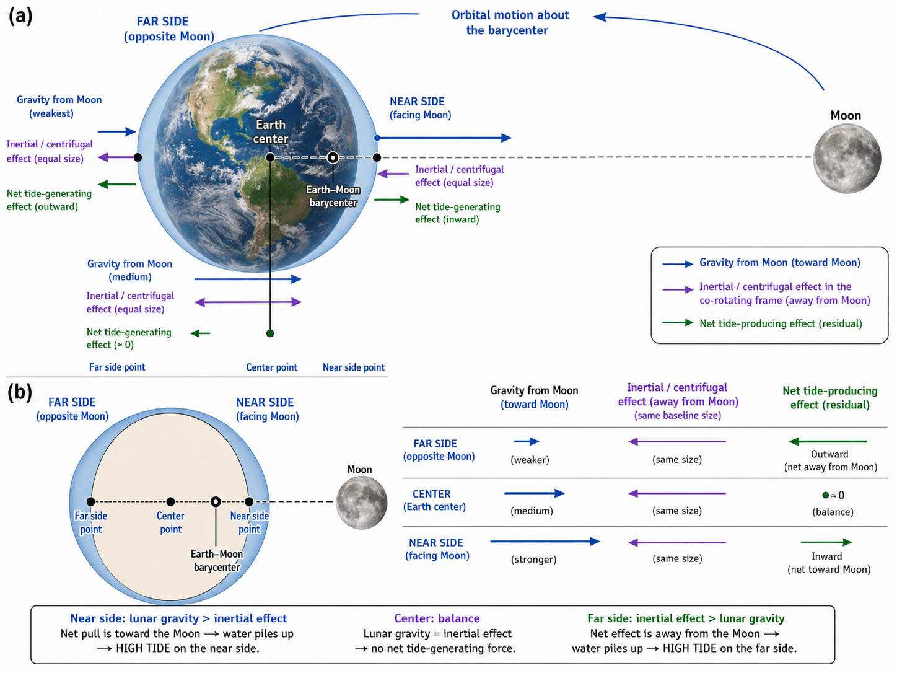
Fig. 5.11 The two tidal bulges arise from differences in the Moon’s gravitational pull across Earth. (a) Lunar gravity is strongest on the side facing the Moon and weakest on the far side. In a frame rotating with the Earth–Moon system, this varying gravitational attraction can be compared with the approximately uniform inertial effect associated with Earth’s motion about the Earth–Moon barycenter. At Earth’s center these effects balance, while their difference points toward the Moon on the near side and away from the Moon on the far side. (b) These residual, or tide-generating, forces stretch Earth along the Earth–Moon direction, producing a high-tide bulge on both the near and far sides. The sizes of the tidal bulges and force vectors are exaggerated for clarity.#
Why is there also a high tide on the opposite side of the Earth?
As the Earth orbits about the Earth-Moon barycenter (i.e., center-of-mass), there is a centrifugal effect where the water bulges outward away from the center-of-mass. The barycenter is closer to the Moon, which means that the gravity from the Moon is weakest on the far side and the net effect is an outward bulge. On the side nearest to the Moon, the Moon’s gravity dominates and produces a bulge towards the Moon. For the points at the top and bottom, the gravity and centrifugal effects are minimized so the tidal effect is also minimal.
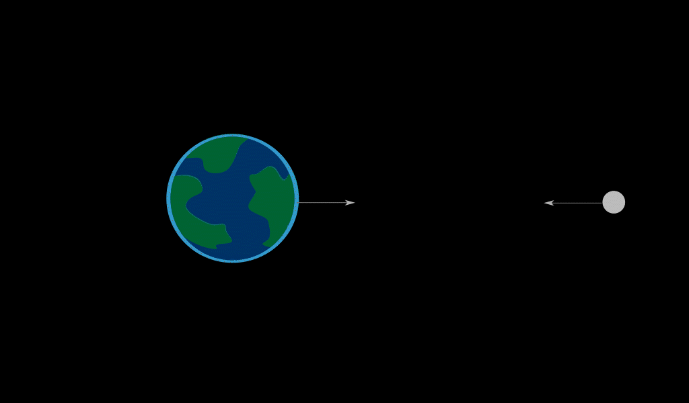
Fig. 5.12 The Moon’s gravitational influence produces two tidal bulges: one on the side of Earth facing the Moon and another on the opposite side. The regions between the bulges correspond to low tides. Credit: NASA/Vi Nguyen.#
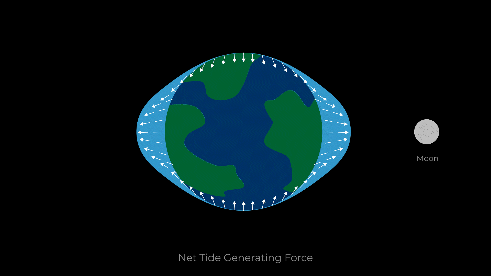
Fig. 5.13 The Moon’s gravitational pull varies across Earth. Together with the motion of the Earth–Moon system, this difference redistributes ocean water and produces bulges on both the near and far sides of Earth. Credit: NASA/Vi Nguyen.#
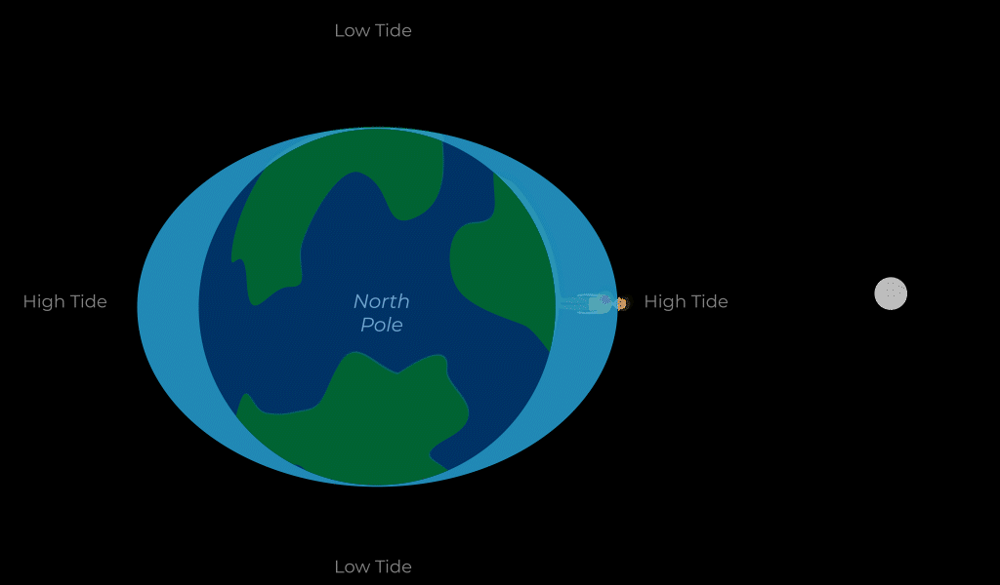
Fig. 5.14 As Earth rotates, locations on its surface move through the tidal bulges. A location experiences high tide while passing through a bulge and low tide while passing through the regions between the bulges. Credit: NASA/Vi Nguyen.#
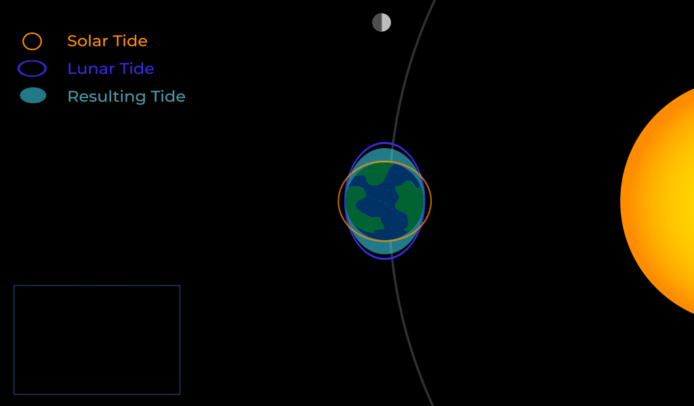
Fig. 5.15 The Sun also contributes to Earth’s tides. When the Sun, Earth, and Moon are approximately aligned, the solar and lunar tidal effects reinforce one another and produce spring tides. When the Sun and Moon are approximately at right angles as viewed from Earth, their tidal effects partially oppose one another and produce neap tides. Credit: NASA/Vi Nguyen.#
Because the Earth is rotating faster than the Moon orbits the Earth, there are two tides per day: two high and two low (see Figure 5.14, or Daily Tide Cycle). The Sun also affects tides, although it has about half the effect of the Moon because it orbits much farther away even though it is more massive. The largest tides (called spring tides because they “spring up”) occur when the Earth, Moon, and Sun form a straight line (i.e., aligned). The smallest tides (called neap tides) occur when the Sun is at a \(90^\circ\) angle to the Earth-Moon alignment.
5.4.3. “Weightlessness” and Microgravity#
What is the effect of “weightlessness” upon an astronaut who is in orbit for months?
Weightlessness doesn’t mean that an astronaut exists in a zero-gravity environment, or is not acted upon by gravity. The term just means that the astronaut is in free-fall, where the astronaut accelerates due to gravity but everything else also falls at the same rate.
Suppose you are in an elevator and the cable holding it breaks, you and the other passengers will be in free-fall and will experience weightlessness. You can experience short periods of weightlessness in some rides at amusement parks or on the so-called “vomit comet” (an airplane that makes parabolic dives).
This video explores some of the challenges of living and moving in low-gravity environments. As you watch, focus on how changes in apparent weight affect the motion of people and liquids.
Microgravity refers to an environment in which the apparent net acceleration of a body is small compared to \(g\) (at Earth’s surface). An immediate concern is the effect on astronauts in low-Earth orbit aboard the International Space Station (ISS). Researchers have observed that muscles will atrophy (waste away) in this environment, where there is also a corresponding loss of bone mass. Astronauts have to work out using elastic resistance to help maintain their muscle mass. See the video above for more of the issues that astronauts will deal with in a low gravity environment if they take the journey to Mars.
5.5. Satellites and Kepler’s Laws#
More than 10,000 artificial satellites orbit Earth together with thousands of pieces of debris. For at least a millennium, it was commonplace to believe everything orbited the Earth. This belief was largely dispelled by Galileo. In the 20th century, we found an unimaginable number of systems containing thousands of stars, galaxies that host billions of stars, and other celestial objects interacting through gravity.
It is possible to describe motions of these astronomical objects to various degrees of precision often with the use of large (i.e., complex) computers. However, we can describe a class of orbits without a computer. These orbits have the following characteristics:
A small mass \(m\) orbits a much larger mass \(M\). This allows us to choose a coordinate system where the origin is essentially at the center of the larger mass \(M\). As a result, the larger mass appears stationary and the smaller mass \(m\) is the satellite of \(M\), if the orbit is gravitationally bound.
The system is isolated from the other masses. This allows us to neglect any small effects due to the outside masses.
These conditions are satisfied for the natural satellites of Jupiter (and the other giant planets) and are approximately valid for Earth’s moon as well as many other satellites. Historically these conditions were applied to the planets of the Solar System, which allowed a mathematician (Johannes Kepler) from the Holy Roman Empire (in the Duchy of Württemberg) to develop a mathematical model for a Sun-centered Solar System. Kepler devised his model after careful study (over some 20 years) of observations made by Tycho Brahe (a Danish astronomer and aristocrat).
5.5.1. Kepler’s Laws of Planetary Motion#
Kepler’s First Law
The orbit of each planet about the Sun is an ellipse with the Sun at one focus.
An orbit is a trajectory meaning that it is the path that the planet traces out each time it goes around the Sun. An ellipse is a 2D slice of a cone, where a circle is a special kind of ellipse. We characterize an ellipse through a few properties:
semimajor axis \(a\): half the distance along the long side of the ellipse. The full distance along the long side is called the major axis.
focus: a point to the right or left of the center of the ellipse. A triangle with a constant perimeter connects a point on the ellipse to the two foci. One side of the triangle always connects the foci with a straight line.
eccentricity \(e\): the fraction by which the foci are displaced from the center of the ellipse. A circle has \(e=0\) because the foci exist exactly at the center. A very eccentric ellipse can have \(e=0.99\), but \(0 < e < 1\) for all ellipses.
Kepler used the known observations of Mars relative to the Earth and Sun to show that Mars’ orbit was elliptical and not circular. Mars’ eccentricity is modest with \(e \approx 0.1\), which was only discernable with Brahe’s more precise observations.
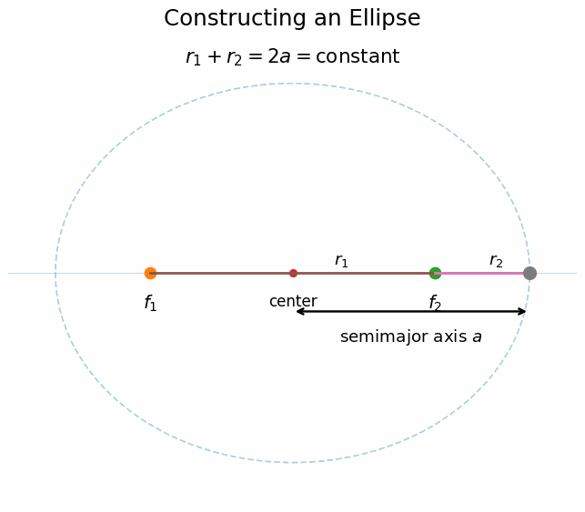
Fig. 5.16 An ellipse is defined by two foci, \(f_1\) and \(f_2\). As a point moves around the ellipse, its distances \(r_1\) and \(r_2\) from the two foci change, but their sum remains constant. The semimajor axis \(a\) extends from the center of the ellipse to its farthest edge along the major axis. A circle is the special case in which the two foci coincide at the center.#
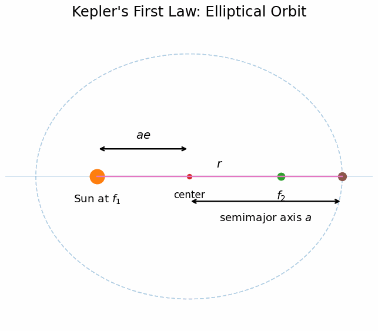
Fig. 5.17 Kepler’s first law states that a planet follows an elliptical orbit with the Sun located at one focus, \(f_1\), rather than at the center of the ellipse. The semimajor axis \(a\) describes the size of the orbit, while the eccentricity \(e\) determines how far each focus is displaced from the center. The center-to-focus distance is therefore \(ae\). The planet’s instantaneous distance \(r\) from the Sun changes continuously as it moves around the orbit.#
Kepler’s Second Law
Each planet moves so that an imaginary line drawn from the Sun sweeps out equal areas in equal times.
Prior scholars (e.g., Copernicus) believed that planetary orbits were circular, which meant that they moved at constant speed. However, Kepler found with his first law that the planets would not move with constant speed. They should speed up near the closest approach to the Sun (perihelion) and slow down when they are farthest away from the Sun (aphelion). To determine how much the planet would speed up or slow down, Kepler employed a geometric constraint through the area swept out at equal time intervals.
Fig. 5.18 Kepler’s second law states that a line connecting an orbiting object \(m\) to the central mass \(M\) sweeps out equal areas during equal time intervals. The shaded regions have the same area, so the time required to move from \(A\) to \(B\) is the same as from \(C\) to \(D\) and from \(E\) to \(F\). Near the central mass, the object must travel a greater distance along its orbit during the same amount of time and therefore moves faster. Farther away, it travels a shorter distance and moves more slowly. Source: OpenStax, College Physics 2e, Figure 6.27.#
If there is a time interval \(t_1\) that measures the motion from point \(A\) to \(B\) (on the side near the Sun), then it also sweeps out an area that appears short and fat. Then a second time interval \(t_2\), that sweeps out an area that is far from the Sun will be long and skinny. It will also have an equivalent swept area.
Kepler’s Third Law
The ratio of the squares of the periods of any two planets about the Sun is equal to the ratio of the cubes of their average distances from the Sun.
When the planet is at either its perihelion or aphelion, we can see that the distance from each foci is \(r_p + r_a = 2a\) (see Figure 5.16). We can see that the average distance of the planet is given by
Therefore, the semimajor axis \(a\) represents the average distance from the Sun. The planet’s orbital period \(T\) is the time it takes to make a complete revolution (i.e., orbit) around the Sun. Then, we can write Kepler’s third law as
This equation is comparative, which means we could simplify it so that \(T_2 = 1\ {\rm yr}\) and \(a_2 = 1\ {\rm AU}\). Then we find that
as long as the period \(T\) is measured in years and the semimajor axis is measured in \(\rm AU\). In the previous version, it is a little less restrictive, but the units on each side must be the same (i.e., \(T_1\) measured in the same units as \(T_2\)).
Physics High reviews Kepler’s laws of planetary motion and connects them to Newtonian mechanics. Pay particular attention to the derivation of Kepler’s third law, which shows why the orbital period \(T\) and semimajor axis \(a\) are related. The derivation provides a useful connection between circular motion, Newton’s law of universal gravitation, and Kepler’s empirical description of planetary orbits.
Kepler devised this third law several years after the first two. It provided a mathematical description for the orbital distances and periods for the planets, but it did not give any information for why they were this way. This is true for Kepler’s laws in general, that they provide a description of planetary orbits, but not why planets orbit the Sun.
5.5.2. Example Problem: Period of an Earth Satellite#
Example Problem: Find the Time for One Orbit of an Earth Satellite
The Problem
The Moon orbits Earth every \(27.3\ {\rm d}\) with a semimajor axis of approximately \(3.84\times10^5\ {\rm km}\). Calculate the period of an artificial satellite orbiting at an altitude of \(1500\ {\rm km}\) above Earth’s surface.
Show worked solution
The Model
Both the Moon and the artificial satellite orbit the same parent body, Earth, so the comparative form of Kepler’s third law applies. The Moon has \(T_1=27.3\ {\rm d}\) and \(a_1=3.84\times10^5\ {\rm km}\). The satellite’s altitude is measured above Earth’s surface, so its orbital semimajor axis is the Earth radius plus the altitude: \(a_2=6371\ {\rm km}+1500\ {\rm km}=7871\ {\rm km}\). The unknown is the satellite period \(T_2\).
The Math
Kepler’s third law compares two objects orbiting the same parent body. The Moon and the artificial satellite both orbit Earth, so their periods and orbital sizes satisfy
The unknown period is \(T_2\), the period of the artificial satellite. The comparison is most useful here when it is written directly for the satellite period \(T_2\):
The satellite’s orbital radius is smaller than the Moon’s orbital radius, so this expression should give a much shorter period than one lunar month. Using the Moon as the reference orbit gives
A period of \(0.0801\ {\rm d}\) is easier to interpret in hours, so we convert days to hours:
The Conclusion
The artificial satellite completes one orbit in about \(1.9\ {\rm h}\). This is much shorter than the Moon’s \(27.3\)-day period because the satellite orbits much closer to Earth, consistent with Kepler’s third law.
Adapted from OpenStax, College Physics 2e, Example 6.7.
5.5.3. Kepler’s Third Law for Circular Orbits (derivation)#
When developing a new description of physics (or a new theory), one constraint is that your new description must explain something from the prior literature. For Isaac Newton, he developed part of his theory of universal gravitation to explain Kepler’s third law, which lacked a clear explanation for why it was so.
We can follow Newton’s logic, by using the universal law of gravitation and Newton’s laws of motion together. Let’s consider a mass \(m\) in a circular orbit around a larger mass \(M\). The smaller mass maintains its orbit about the larger mass through gravity. But, the smaller mass has a tangential motion, where gravity bends it into a curved path to make an orbit. These are both descriptions of an acceleration that is changing the direction of the velocity for the smaller mass. Thus, we can use Newton’s second law:
The net force \(F_{\rm net}\) is described by the centripetal force, which itself is caused by gravity. So we set these two forces equal to each other to get
where \(r\) describes the distance from the larger mass \(M\) to the smaller mass \(m\) and is the same on both sides. The velocity \(v\) is the linear speed of the smaller mass \(m\). We can simplify the above expression by canceling (or reducing) like terms on both sides of the equation to get:
We started with a small mass in a circular orbit, which means we can determine the velocity using its definition of \(v = d/t\).
What is the distance traveled for a single orbit?
Since we have a circular orbit, the distance traveled is simply the circumference of the circle. The smaller mass takes a time \(T\) to complete the orbit, so we can write the velocity (and the velocity squared) as
Now we can substitute back into our previous expression for \(v^2\) to get
Recall that Kepler’s third law was \(T^2 \propto a^3\). For a circular orbit \(r=a\), so we can simply make a direct substitution. We also want to get the \(T^2\) on top and by itself. With some algebra, we have Newton’s version of Kepler’s 3rd law
This tells us that the period of an orbit squared is proportional to the average distance \(a\) cubed and inversely proportional to the central mass \(M\). With this insight, we can apply Kepler’s third law to stars that are not the Sun and to satellites within the Solar System (i.e., Earth’s Moon and moons of Jupiter). If we always measure the orbital period in years, central mass in solar masses \(M_\odot\), and the semimajor axis in \(\rm AU\), then we can use a simplified version as
To recover the comparative version of Kepler’s third law (Eqn. (5.21)), we say there are two small masses \(m_1\) and \(m_2\) that orbit the central dominant mass \(M\). Then each mass has its own respective orbital period (\(T_1\) and \(T_2\)) and semimajor axis (\(a_1\) and \(a_2\)).
They both orbit the same central mass \(M\) and are affected by the same constant for the universal law of gravitation \(G\). If we take the ratio of the orbital periods squared, then these other factors cancel:
Parent \(M\) |
Satellite |
Semimajor axis \(a\) (AU) |
Period \(T\) |
\(T^2M/a^3\) |
|---|---|---|---|---|
Earth |
Moon |
\(2.567\times10^{-3}\) |
\(0.07481\) (27.32 d) |
\(0.994\) |
Sun |
Mercury |
\(0.3870\) |
\(0.2409\) |
\(1.001\) |
Sun |
Venus |
\(0.7233\) |
\(0.6150\) |
\(1.000\) |
Sun |
Earth |
\(1.000\) |
\(1.000\) |
\(1.000\) |
Sun |
Mars |
\(1.523\) |
\(1.881\) |
\(1.001\) |
Sun |
Jupiter |
\(5.203\) |
\(11.86\) |
\(0.999\) |
Sun |
Saturn |
\(9.539\) |
\(29.46\) |
\(1.000\) |
Sun |
Neptune |
\(30.06\) |
\(164.8\) |
\(1.000\) |
Sun |
Pluto |
\(39.44\) |
\(248.3\) |
\(1.005\) |
Jupiter |
Io |
\(2.821\times10^{-3}\) |
\(0.00485\) (1.77 d) |
\(1.000\) |
Jupiter |
Europa |
\(4.485\times10^{-3}\) |
\(0.00972\) (3.55 d) |
\(0.999\) |
Jupiter |
Ganymede |
\(7.152\times10^{-3}\) |
\(0.0196\) (7.16 d) |
\(1.002\) |
Jupiter |
Callisto |
\(1.257\times10^{-2}\) |
\(0.0457\) (16.69 d) |
\(1.005\) |
When the orbital period is measured in years, the semimajor axis in AU, and the parent mass in solar masses, the quantity \(T^2M/a^3\) is approximately 1 for planets, Earth’s Moon, and Jupiter’s moons. This demonstrates that Kepler’s third law is not unique to planets orbiting the Sun; it is a general consequence of gravity.
5.6. In-Class Exercises#
5.6.1. Instructions#
You will use the final 20 minutes of class to begin the problems assigned for that class day. First, you must make a serious attempt on each assigned problem independently. After developing your own approach, you may compare ideas and discuss the problems with other students.
Each student must prepare and submit an individual solution. Organize each quantitative solution using the Problem–Model–Math–Conclusion format. Show your reasoning, equations, substitutions with units, and interpretation of the result. A numerical answer without supporting work is not a complete solution.
Open this page in Google Colab so you can easily copy the problems to the template without retyping them.
Export your completed Jupyter notebook as a PDF and submit the PDF to D2L by 11:59 p.m. CT on the day of class. The PDF filename must follow the format LastName_ChXX_SetY.pdf, where XX is the two-digit chapter number and Y is the problem-set number.
Make your own copy before beginning
A read-only Jupyter notebook template is available on D2L. Before entering any work, you must make your own editable copy of the notebook by selecting Save a copy in Drive.
Changes made directly to the read-only template cannot be saved. It does not matter how much work you enter: if you have not made your own copy, your changes will be lost. Confirm that you can rename and save your copy before beginning the problems.
5.6.2. Problems#
Problem 1
An automobile with \(0.26\ {\rm m}\) radius tires travels \(80{,}000\ {\rm km}\) before wearing them out. How many revolutions do the tires make, neglecting any backing up and any change in radius due to wear?
Problem 2
A fairground ride spins its occupants inside a flying saucer-shaped container. If the horizontal circular path the riders follow has an \(8.0\ {\rm m}\) radius, at how many revolutions per minute will the riders be subjected to a centripetal acceleration whose magnitude is \(1.50\) times that due to gravity?
Problem 3
(a) A \(22\ {\rm kg}\) child is riding a playground merry-go-round that is rotating at \(40\ {\rm rev/min}\). What centripetal force must she exert to stay on if she is \(1.25\ {\rm m}\) from its center?
(b) What centripetal force does she need to stay on an amusement park merry-go-round that rotates at \(3.0\ {\rm rev/min}\) if she is \(8.0\ {\rm m}\) from its center?
(c) Compare each force with her weight.
Problem 4
(a) Calculate the magnitude of the gravitational force exerted on a \(4.2\ {\rm kg}\) baby by a \(100\ {\rm kg}\) father \(0.20\ {\rm m}\) away at birth (he is assisting, so he is close to the child).
(b) Calculate the magnitude of the force on the baby due to Jupiter if it is at its closest distance to Earth, some \(6.29\times10^{11}\ {\rm m}\) away. How does the force of Jupiter on the baby compare to the force of the father on the baby?
Problem 5
Find the mass of Jupiter based on data for the orbit of one of The Galilean moons, and compare your result with its actual mass.
5.7. Homework#
5.7.1. Instructions#
Homework assignment
The homework is designed to give you regular practice applying the ideas developed in this chapter. A read-only Jupyter notebook template for the assignment is available on D2L. Before entering any work, you must make your own editable copy of the notebook. Changes made directly to the read-only template cannot be saved, so confirm that you can rename and save your copy before beginning.
There are two types of homework questions:
Conceptual questions: Copy the question into your notebook and answer it under a heading titled The Conclusion. Your response should be a paragraph that directly answers the question and explains the physical reasoning behind your answer. A Model or Math section is not required unless the question genuinely requires a calculation.
Quantitative questions: Copy the problem into your notebook and organize your solution using the Problem–Model–Math–Conclusion format. Identify the physical situation, assumptions, knowns, unknowns, and sign convention in the Model; develop and apply the necessary equations in the Math; and state, interpret, and check your result in the Conclusion. Include units in numerical substitutions.
The worked examples and Check Your Understanding questions on the course webpage provide examples of the reasoning and solution style expected in your homework.
Don’t wait until the night it is due
Homework is much easier to manage when you complete a couple of problems at a time as you work through the chapter. This gives you time to identify concepts that you do not understand and ask questions before the due date. Trying to complete the entire assignment the night it is due usually leaves little time to diagnose mistakes or revisit the course material.
Submission
When your assignment is complete, export the Jupyter notebook as a PDF and submit the PDF to D2L by 11:59 p.m. CT on the due date.
Name your submitted file using the format LastName_ChXX_HW.pdf. Replace LastName with your last name and XX with the two-digit chapter number. For example, homework for Chapter 2 submitted by Jane Smith would be Smith_Ch02_HW.pdf.
Before submitting, open the PDF and make sure that all questions, equations, figures, and solutions are visible and readable.
5.7.2. Conceptual Questions#
Problem 1
There is an analogy between rotational and linear physical quantities. What rotational quantities are analogous to distance and velocity?
Problem 2
Two friends are having a conversation. Anna says a satellite in orbit is in free-fall because the satellite keeps falling toward Earth. Tom says a satellite in orbit is not in free-fall because the acceleration due to gravity is not \(9.81\ {\rm m/s^2}\). Who do you agree with and why?
5.7.3. Quantitative Questions#
Problem 3
A truck with \(0.42\ {\rm m}\)-radius tires travels at \(32\ {\rm m/s}\). What is the angular velocity of the rotating tires in radians per second? What is this in rev/min?
Problem 4
A runner taking part in the \(200\ {\rm m}\) dash must run around the end of a track that has a circular arc with a radius of curvature of \(30\ {\rm m}\). If the runner completes the \(200\ {\rm m}\) dash in \(23.2\ {\rm s}\) and runs at constant speed throughout the race, what is the magnitude of their centripetal acceleration as they run the curved portion of the track?
Problem 5
What is the ideal banking angle for a gentle turn of \(1.20\ {\rm km}\) radius on a highway with a \(105\ {\rm km/h}\) speed limit (about \(65\ {\rm mph}\)), assuming everyone travels at the limit?
Problem 6
(a) What is the acceleration due to gravity on the surface of the Moon?
(b) On the surface of Mars? The mass of Mars is \(6.418\times10^{23}\ {\rm kg}\) and its radius is \(3380\ {\rm km}\).